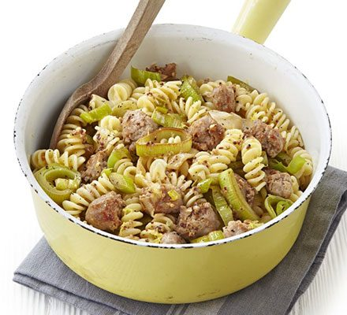

Sausage, leek and fennel pasta

This quick and easy pasta dish is sure to be a family favourite and it's ready in 35 minutes!
Try to buy the best quality sausages you can: I buy ones with a minimum of 90% pork as they have a nicer flavour and less fat.
You can adjust the recipe by adding chilli flakes instead of fennel and even add some single cream to make an extra
creamy sauce.
Prep:10 mins
Cook:25 mins
Serves:4
- 1 tbsp olive oil
- 6 good quality pork sausages
- 3 leeks, thinly sliced
- 400g fusilli
- 2 garlic cloves, crushed
- 1 tsp fennel seeds
- 2 tsp wholegrain mustard
- zest of 1 lemon
- grated parmesan to serve
- Optional:Add 2 heaped tblsp of creme fraiche
Steps
- Heat the oil in a large frying pan. Break the sausages up into small, bite sized pieces
with your hands. Cook over a medium-high heat for 8-10 mins until browned and
crispy in places. Remove using a slotted spoon and set aside.
- Boil a full kettle. Add the leeks to the pan and season. Cook over a low heat for 10-12
mins until softened and just starting to caramelise. Meanwhile, fill a large pan with the
boiled water and some salt, and cook the pasta following pack instructions. Drain, reserving
150ml of the cooking water.
- Add the garlic and fennel seeds to the leeks and cook for 2 mins. Stir through the mustard and
sausages, then pour in 100ml of the pasta water and let it bubble for 1 min. If you're using creme
fraiche then add that in now and stir briefly until well mixed. Tip in the pasta,
sprinkle over the lemon zest and toss everything together, adding a little more pasta water if
needed. Divide between plates and top with Parmesan and black pepper before serving.